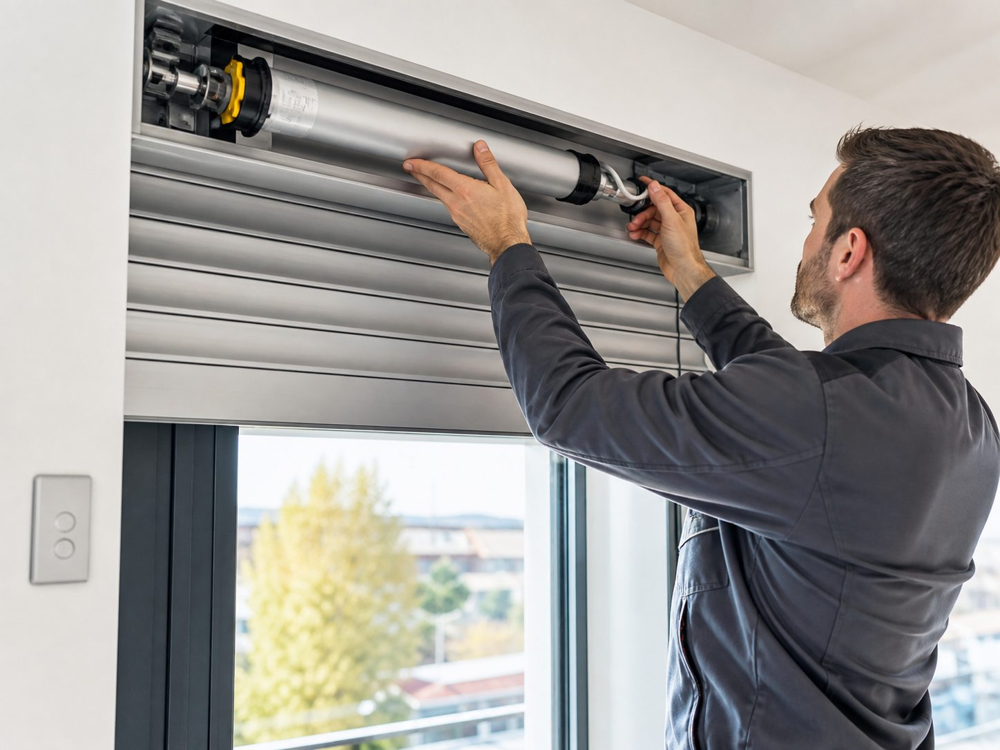

El motor debe ir acorde al peso de la persiana
Una buena motorización empieza calculando bien el esfuerzo que necesita mover para evitar fallos prematuros.
Motorizamos persianas manuales y sustituimos motores averiados para que puedas subir y bajar la persiana sin esfuerzo.

Una buena motorización empieza calculando bien el esfuerzo que necesita mover para evitar fallos prematuros.
No basta con colocar el motor: debe subir, bajar y detenerse donde corresponde, sin forzar el sistema.
Especialmente en persianas grandes o pesadas, motorizar cambia por completo la experiencia de uso.
Motorizar una persiana significa cambiar el sistema manual de cinta o cordón por un motor que sube y baja la persiana con solo pulsar un botón. Es una mejora muy cómoda, especialmente en persianas grandes, de difícil acceso o de uso frecuente.
En Persianas Zambrana instalamos motores nuevos y sustituimos motores averiados en persianas de viviendas y locales de Málaga. Si tu persiana ya estaba motorizada y el motor ha dejado de funcionar, también lo cambiamos para que recuperes el manejo automático.
La motorización es ideal en estas situaciones.
Motor averiado en una persiana que ya estaba motorizada.
Persianas grandes o pesadas que cuesta subir a mano.
Comodidad y accesibilidad para personas mayores o con movilidad reducida.
Varias persianas que quieres manejar de forma más práctica.
Cansancio de la cinta y ganas de olvidarte del sistema manual.
Persianas de difícil acceso, altas o detrás de muebles.
Sube y baja la persiana con un botón, sin esfuerzo y sin tirar de la cinta.
Ideal para persianas grandes o para quienes tienen dificultad de movimiento.
El motor evita el desgaste de cinta y recogedor por el uso manual.
Indícanos el tamaño y el tipo de persiana que quieres motorizar.
Te asesoramos sobre el motor más adecuado para tu caso.
Montamos el motor y comprobamos el funcionamiento antes de terminar.
Contacta con Persianas Zambrana y te asesoramos sin compromiso. Atención directa por teléfono y WhatsApp en Málaga.
La mayoría de persianas habituales se pueden motorizar. Depende del tamaño, el peso y el espacio del cajón. Cuéntanos tu caso y te lo confirmamos.
Existen ambas opciones. Te asesoramos sobre la más práctica según tu instalación y tus preferencias.
Sí, sustituimos motores averiados para que la persiana vuelva a funcionar de forma automática.
Sí, valoramos tu persiana y te indicamos la solución y el motor recomendado antes de instalar.